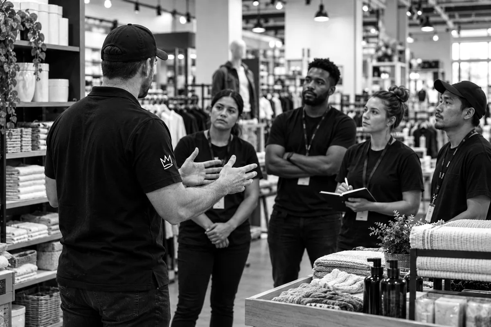

You have a growth move in mind. SKALA can help you build the systems and teams to make it work, before the next location or major expansion puts the operation under pressure.
Growth gets harder when the systems behind it do not keep up. SKALA builds the operating, development, real-estate, and franchise capabilities the next move requires.
What breaks
The business relies too much on experienced managers knowing what good looks like. The right behaviors are hard to standardize and harder to make stick. Training, reporting, and system use vary by location. Managers spend too much time putting out fires and not enough time leading. Turnover resets progress, and the team keeps reteaching the same work.
What SKALA builds
Operating standards and routines
Manager expectations and leadership rhythms
Onboarding and training systems
Field-support tools
Scorecards and operating reviews
HCM / WFM rollout and adoption
LMS rollout and training
POS rollout and team training
Traffic-counting and conversion measurement
Portfolio-wide reporting
Four-wall reporting
What becomes possible
More consistent execution across locations, more manager time spent leading, and less dependence on individual memory or heroic managers.
What breaks
The team can’t keep up with the build schedule. Critical dates surface late. Permits and orders get missed. Sites aren’t ready when they need to be, and lessons from the last opening don’t carry forward.
What SKALA builds
Store-development pipelines
Clear owners and accountability
Budgets and milestone tracking
Opening calendars and critical-date visibility
Permitting and procurement checkpoints
Cross-functional readiness plans
Development-to-operations handoffs
Ready-to-operate opening support
What becomes possible
The next opening carries forward what the business learned from the last one—instead of rebuilding the process every time.
What breaks
Location decisions rely too much on gut instinct. Site criteria are loose. Market, trade-area, and competitive data aren’t applied consistently. Sites get judged one at a time, so overlap is easy to miss—and what existing stores teach you doesn’t always improve the next decision.
What SKALA builds
Site-selection criteria
Market and trade-area analysis
Competitive mapping
Cannibalization and market-overlap analysis
Location screening
Real-estate pipeline discipline
Business and operating inputs for site decisions
Lease-process coordination
Development and operations alignment before commitment
Store-performance feedback into site criteria
Scope note
Business, operating, and coordination inputs. SKALA does not provide brokerage or legal representation.
What becomes possible
A more disciplined way to compare opportunities, spot avoidable overlap earlier, and make each site decision smarter than the last.
What breaks
The right candidates are hard to find. Good-fit prospects often don’t qualify financially, while financially qualified prospects aren’t always the right fit. The sales process drags, too many prospects fall out, and awards can end with candidates who require too much support—or who the brand isn’t confident in. The team can’t always tell which sources produce the right candidates, where strong prospects are falling out, or whether existing franchisees are helping validate the opportunity.
What SKALA builds
Franchise marketing and lead-generation structure
Candidate profile and qualification criteria
Franchise sales process
Pipeline stages, ownership, and follow-up
Lead-source and funnel measurement
Business and operating inputs for the FDD
Coordination with franchise counsel
Franchise award workflow
Franchisee validation and referral process
Franchisee opening support
Ongoing franchisee support systems
Royalty-management processes
Scope note
Business and operating inputs for the FDD, developed alongside franchise counsel. SKALA does not draft legal documents.
What becomes possible
A repeatable path from qualified, brand-fit prospect to operating franchisee, with clearer visibility into what converts, stronger validation, and better support after the award.

Strong operators prepare.
Build aBusinessThat’s readyFor growth.
How we work
Get close to the work. Then start building.
We work alongside your team to find what is holding the business back and build what is missing. We stay involved until your people can run it themselves.
Before the doors open
Expansion ready
Know when the business is ready to grow.
Every piece of the operation sits somewhere on this scale. The work is done when it holds without the person who built it.
S
Siloed
Know-how lives with individuals. Each location works differently.
C
Captured
Core processes are written down, but use is inconsistent.
A
Adopted
Teams are trained. Standards are followed in daily work.
L
Linked
Locations share reporting, accountability, and a regular review rhythm.
E
Expansion-ready
The system works without its original builder and transfers to new locations.
From Linked to Expansion-ready
Example workboard for the selected stage. Select a status to cycle it through Building, Testing, and In use. When every step is in use, the stage is complete.
Step
Action
Status
1
Hand the tools to a new location without changes
2
Run onboarding without the person who built it
3
Start the review rhythm in every new location on day one
Expansion ready.Now it can repeat.
Playbook
Plays from the work.
Practical notes and working tools on building a business that can keep moving. Open one here, or take the whole playbook with you.
The strongest performer becomes the biggest single point of failure.The address was fine. The market wasn’t.Any daylight between the two is exactly where your pipeline is leaking.A schedule with no room for either isn’t a schedule, it’s a hope.
Twelve years of building teams and departments from the ground up, driving 7X system sales growth, delivering 160 store projects, and building a franchisor infrastructure across the U.S. and Canada.
Tavis has helped scale operations from 20 to 180+ stores and field teams from 50 to 500+, with experience across operations, training, field support, real estate and leasing, store development, and franchise development.
With SKALA, he brings that experience to brands preparing for their next stage of growth.
Defined projects. Fractional operating leadership. Interim leadership.
Ready to scale
SKALA
Standards the team can use
An owner for every task
A cadence for reviewing the work
Stronger openings built on experience
Let’s build.
Tell us what you are building and where the operation needs to get stronger.